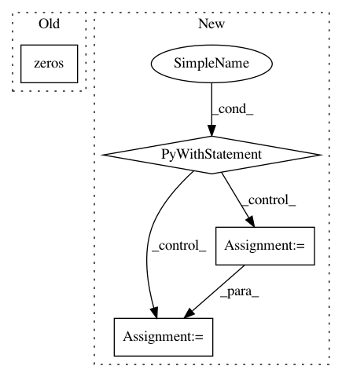

a17b669606cdc5c16fb823b5f00abcacf6a68d70,dipy/reconst/dti.py,TensorFit,odf,#TensorFit#Any#,173
Before Change
return self.evals.mean(-1)
def odf(self, sphere):
odf = np.zeros(sphere.vertices.shape[0])
D = np.dot(np.dot(self.evecs,
np.diag(self.evals)),
self.evecs.T)
iD = np.linalg.inv(D)
After Change
def odf(self, sphere):
lower = 4 * np.pi * np.sqrt(np.prod(self.evals, -1))
projection = np.dot(sphere.vertices, self.evecs)
with warnings.catch_warnings():
warnings.simplefilter("ignore")
projection /= np.sqrt(self.evals)
odf = vector_norm(projection) ** -3 / lower
// Zero evals are non-physical, we replace nans with zeros
any_zero = (self.evals == 0).any(-1)
odf = np.where(any_zero, 0, odf)
// Move odf to be on the last dimension
odf = np.rollaxis(odf, 0, odf.ndim)
In pattern: SUPERPATTERN
Frequency: 3
Non-data size: 4
Instances
Project Name: nipy/dipy
Commit Name: a17b669606cdc5c16fb823b5f00abcacf6a68d70
Time: 2012-10-24
Author: mrbago@gmail.com
File Name: dipy/reconst/dti.py
Class Name: TensorFit
Method Name: odf
Project Name: asyml/texar
Commit Name: 47c71c0524c7804863f2f4bcffdef5a873d84a55
Time: 2017-10-16
Author: junxianh2@gmail.com
File Name: txtgen/modules/connectors/connectors_test.py
Class Name: TestConnectors
Method Name: test_concat_connector
Project Name: jsalt18-sentence-repl/jiant
Commit Name: 2573c649518391ada6214cfc72d20421dfac4072
Time: 2018-03-16
Author: wang.alex.c@gmail.com
File Name: src/preprocess.py
Class Name:
Method Name: get_embeddings